AnyPortrait > 메뉴얼 > PSD 파일 다시 가져오기
PSD 파일 다시 가져오기
1.0.6
PSD 파일로부터 캐릭터를 만든 뒤에 나중에 다시 원본의 이미지를 수정하고자 할 때가 있습니다.
이전 버전까지는 PSD 파일의 그림을 고치더라도 이미 만들어진 캐릭터에 변경된 그림을 적용하는 방법은 없었습니다.
(Bake된 Atlas를 직접 수정하는 방법이 유일했습니다.)
1.0.6 버전에 추가된 기능을 이용하면 원본을 수정하고, 다시 AnyPortrait로 가져오는 것이 가능합니다.
다만, 그 과정이 매우 복잡하므로 다음의 가이드를 꼭 숙지하시길 바랍니다.
필요하다면 미리 백업이나 복사본을 만드는 것을 권장합니다.
이 페이지에서는 다시 PSD 파일을 가져오는 방법과 주의해야할 점들을 다룹니다.

이 페이지에서 참조되는 캐릭터 일러스트입니다.
첫번째 버전의 이미지의 소녀를 보면, 머리에 뿔이 달려있지 않으며, 소녀는 보라색 큐브를 들고 있습니다.
수정된 버전의 이미지의 소녀의 머리에는 뿔이 달려있으며, 보라색 큐브대신 로봇 인형을 들고 볼에는 상기된 표정의 효과가 추가되었습니다.
PSD 파일이 수정되었을 때에는 다음의 경우에 따라서 다르게 처리되어야 합니다.
1. 레이어가 수정되었을 때 : 레이어의 이미지 크기와 위치가 변경되었으므로, 위치를 보정해야합니다.
2. 레이어가 삭제되었을 때 : 다시 여는 PSD에서 레이어가 삭제된 경우입니다. 새로 Atlas를 만들 때에는 포함되지 않으며, 이전의 Atlas를 참조하여 메시와 메시 그룹이 유지됩니다. 자동으로 삭제되지 않으며, 이 레이어가 참조하는 Atlas 역시 삭제되지 않습니다.
3. 레이어가 추가되었을 때 : 새로운 메시가 생성됩니다. 다만 새로 추가된 메시는 메시 그룹의 최상단에 추가됩니다.
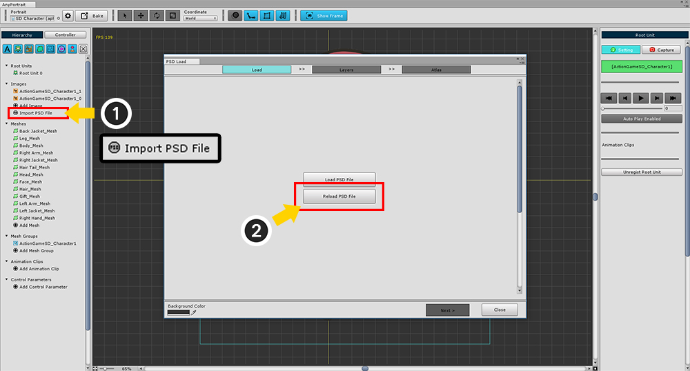
(1) Import PSD File 버튼을 누릅니다.
(2) 첫 페이지에서 Reload PSD File 버튼을 누릅니다.

PSD 파일을 다시 가져오는 화면의 기본 구성입니다.
1. 5단계의 가져오기 과정 : 화면 상단에는 현재 단계를 표시합니다. 각 단계에서 수행해야할 작업들이 있습니다.
2. 배경색상, PSD와 메시의 외곽선 색상 : 미리 보기 화면에서 배경 색상과 PSD의 이미지 외곽선 색상, 메시의 외곽선 색상을 설정할 수 있습니다.
3. Next, Prev, Close, Complete 버튼 : 각 단계을 이동하거나 종료합니다.

PSD 파일로부터 생성된 캐릭터가 있다면 "PSD 세트"가 추가되어있을 것입니다.
(아무것도 없다면 이 페이지의 다음 내용을 참고하세요.)
(1) PSD 세트를 선택합니다.
(2) PSD 파일을 변경하고자 한다면 Change 버튼을 눌러서 가져올 PSD 파일을 선택합니다.
(3) "이전의 Bake 설정"과 "가져올 PSD 파일의 속성"을 개략적으로 보여줍니다.
(4) Next 버튼을 눌러서 다음 단계로 이동합니다.
위 과정이 제대로 처리되지 않았다면 Next 버튼이 비활성됩니다.

두번째 페이지에서는 "PSD가 적용될 메시 그룹과 이미지", "PSD 파일과 메시 그룹의 크기와 위치 조정"을 선택하고 조정해야합니다.
기본적으로는 대부분 자동으로 설정되어 있지만, 미리보기 화면을 통해서 수작업으로 보정을 해야합니다.
이 화면은 다음과 같이 구성되어있습니다.
1. Target Mesh Group : 적용되어야 하는 메시 그룹입니다.
2. Baked Images : Atlas가 덮어쓰거나 참조할 이미지들입니다. 대상이 되는 메시 그룹이 참조하고 있는 이미지들을 추가하면 됩니다.
3. Bake Scale : PSD가 메시 그룹에 적용되어야 하는 크기 비율입니다. PSD 대비 메시 그룹의 크기 비율을 설정합니다.
4. Rendering Type : 미리보기 화면에서 어떤 객체가 보여질지 설정할 수 있습니다.
5. Offset : PSD와 메시 그룹의 위치 차이를 보정할 수 있습니다.
6. 미리보기 화면 : 선택된 객체들을 출력합니다. 이 화면을 보면서 크기와 위치를 보정합니다. AnyPortrait의 메인 에디터와 동일하게 마우스와 키보드를 이용하여 화면을 이동하거나 확대/축소할 수 있습니다.

Rendering Type은 각각 다음의 렌더링 여부와 방식을 결정합니다.
1. 이미지 : 좌측의 Baked Image 리스트에서 선택한 이미지를 미리볼 수 있습니다.
2. 메시 그룹 : 메시 그룹의 출력 여부를 결정합니다.
3. PSD 이미지 : PSD 이미지의 출력 방식을 결정합니다. "보이지 않음", "외곽선만 보이기", "보이기"의 3가지 방식을 전환합니다.

만약 이미지를 보고자 한다면, (1) 이미지를 선택하고, (2) 이미지 버튼만 켜고 나머지는 끕니다.

가장 중요한 단계 중 하나입니다.
미리보기 화면에서 메시 그룹과 PSD의 이미지가 정확히 겹치도록 (1) Offset 값을 수정합니다.
위치 값을 직접 입력해도 되며, 우측의 버튼들을 이용하여 X, Y 값을 증감할 수 있습니다.
PSD 파일의 캔버스 크기가 수정된 경우, 정수의 위치 보정값으로는 정확히 겹치지 않을 수 있습니다.
Offset 값에 정수가 아닌 실수 값을 넣을 수 있습니다.


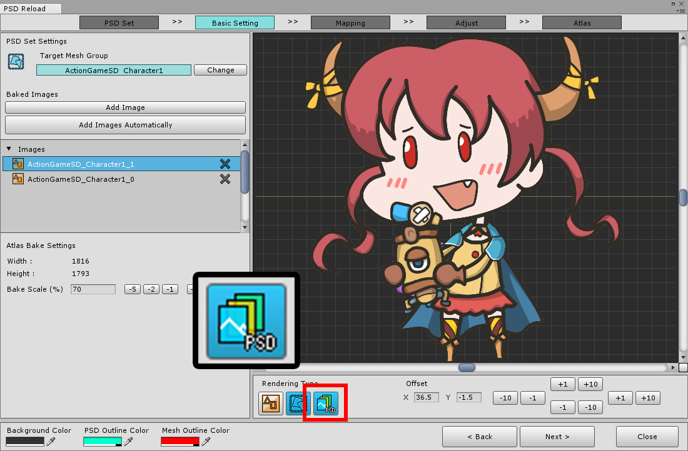
Rendering Type을 바꾸면서 이미지가 정확히 겹치는지 확인할 수 있습니다.
꼼꼼하게 확인한 뒤 Next 버튼을 눌러서 다음 단계로 이동합니다.

세번째 단계에서는 "PSD 파일의 레이어가 어느 메시/메시그룹에 적용될 것인지"를 설정해야합니다.
PSD 파일의 모든 레이어가 나타나며, 우측에는 선택된 메시 그룹의 하위 메시와 메시 그룹이 나타납니다.
이 화면은 다음과 같이 구성되어 있습니다.
1. PSD Layers : PSD 파일의 레이어들입니다. 썸네일이 나타나므로 쉽게 확인할 수 있습니다. Bake를 할 것인지, 어느 객체에 덮어쓸 것인지 설정할 수 있습니다.
2. 적용될 오브젝트들 : 대상 메시 그룹의 하위 메시와 메시 그룹들입니다. 덮어쓰기되도록 설정된 경우 연결된 PSD 레이어 이름이 같이 출력됩니다.
3. Auto Mapping : 이름과 레이어 순서를 기준으로 자동으로 연결합니다. 사용 후 확인을 해야합니다.
4. Enable All / Disable All : 모든 레이어에 대해서 Bake 여부를 켜거나 끕니다. 비활성이 된 레이어는 연결 정보도 없어집니다.
5. Reset : Bake 여부를 그대로 둔 채로 연결 정보를 모두 초기화합니다.
6. 연결 상태를 색상으로 보이기 : 색상을 이용하여 양쪽의 연결 상태를 보기 쉽게 알려줍니다.
7. 외곽선으로 미리보기 : 이 기능이 켜진 경우 미리보기 화면에서 외곽선으로 렌더링이 됩니다.
8. 미리보기 화면 : 선택된 PSD 레이어의 이미지와 연결된 메시를 출력합니다. 그룹 타입의 PSD 레이어를 선택한 경우 아무것도 출력되지 않습니다.
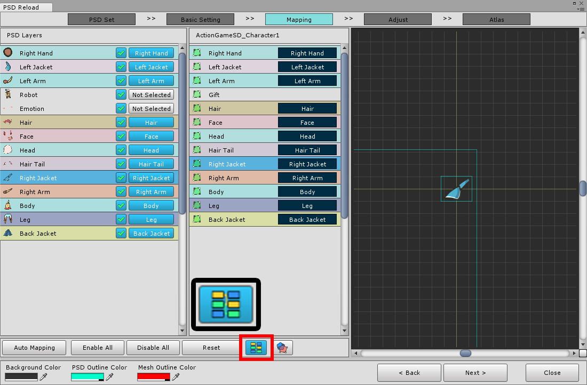
"연결 상태를 색상으로 보이기" 버튼을 누르면 리스트의 배경 색상이 각각 다르게 나타납니다.
연결된 PSD 레이어와 오브젝트는 동일한 배경색으로 나타납니다.

"외곽선으로 미리보기" 버튼을 미리보기 화면에서 PSD 레이어와 메시가 반투명한 색상의 외곽선으로 나타납니다.
색상은 화면 좌측 하단에서 변경할 수 있습니다.
(이 단계에서 위치와 크기가 맞지 않을 수 있습니다.)

PSD 레이어와 대상 객체를 연결하는 방법입니다.
(1) PSD 레이어의 연결 버튼을 누릅니다.
(2) 연결하고자 하는 객체의 Select 버튼을 누릅니다.

Bake하지 않을 PSD 레이어는 (1) 활성/비활성 버튼을 눌러서 Bake되지 않도록 할 수 있습니다.
이 버튼을 다시 누르면 Bake를 하도록 활성할 수 있습니다.
이 버튼을 누를 때 연결 정보가 초기화되므로, 연결 정보를 초기화 할 때 유용합니다.

(1) Auto Mapping 버튼을 누르면 "활성화되고 아직 연결이 안된 모든 PSD 레이어들"에 대해서 자동으로 객체를 연결합니다.
객체와 레이어의 이름을 비교하여 동일하거나 가장 유사한 두개를 연결하기 때문에 간혹 잘못 연결할 수 있습니다.
제대로 연결이 되었는지 꼭 확인하시길 바랍니다.

네번째 단계에서는 "모든 PSD 레이어와 메시에 대해서 위치와 크기"를 보정해야합니다.
이 화면은 다음과 같이 구성되었습니다.
1. PSD Layers : Bake될 PSD 레이어들입니다.
2. Rendering / Order : 미리보기 화면에서의 렌더링 방식과 출력 순서를 변경합니다.
3. Position Offset : 적용될 메시에 대해서 PSD 레이어의 위치를 보정하는 도구들입니다.
4. Prev. Atlas Scale : 이전에 생성된 Atlas의 크기를 입력하는 도구입니다. 이 값은 모든 레이어에 동일하게 적용됩니다.
5. 레이어 전환 버튼 : 이전, 다음 레이어를 선택합니다.
6. 미리보기 화면 : 선택된 메시와 PSD 레이어를 출력합니다. 출력 방식에 관계없이 메시의 형태를 출력합니다.
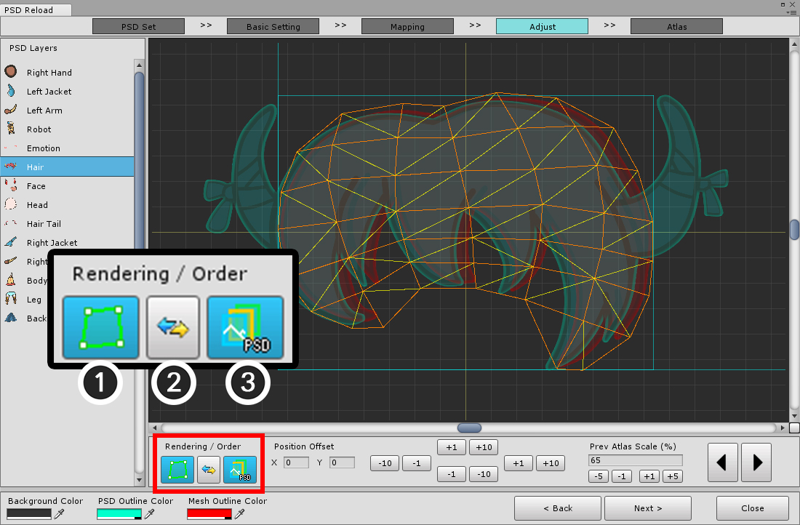
미리보기 화면에서 렌더링을 하는 방식은 다음과 같습니다.
1. 메시 렌더링 방식 : 메시의 렌더링 방식을 "보이지 않기", "외곽선만 보이기", "전부 보이기"로 전환합니다.
2. 렌더링 순서 전환 : 메시를 먼저 렌더링할 지, PSD 레이어 이미지를 먼저 렌더링할 지의 순서를 전환합니다.
3. PSD 이미지 렌더링 방식 : PSD 레이어 이미지의 렌더링 방식을 "보이지 않기", "외곽선만 보이기", "전부 보이기"로 전환합니다.
위치와 크기를 보정하면서 보기 편하게 선택하면 되겠습니다.

가장 중요한 단계입니다.
PSD 레이어를 선택하고 위치를 보정합니다.
(크기는 기본적으로 적절하게 설정되어 있지만, 수정해야하는 경우 이 페이지 하단의 내용을 참고하세요.)
(1) Position Offset의 도구들을 이용해서 수정합니다. 실수값을 입력할 수 있습니다.
미리보기 화면을 통해서 위치가 정확히 겹치는지 확인합니다.
작업이 끝났다면 다음 레이어를 선택합니다. (2) 레이어 전환 버튼이 작업 효율을 높이는데 도움을 줄 것입니다.
모든 레이어에 대해서 위치를 확인하고 보정합니다.
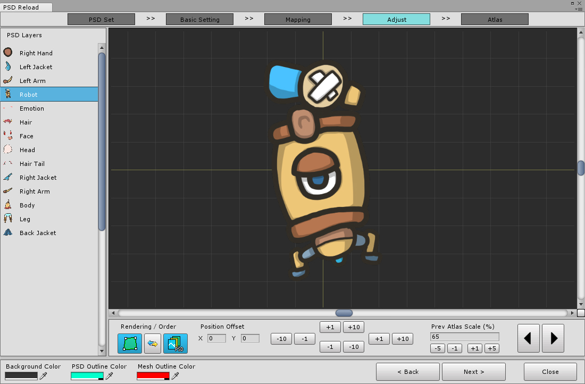
새로 추가되는 이미지 레이어에 대해서는 별도의 위치, 크기 보정이 필요없습니다.
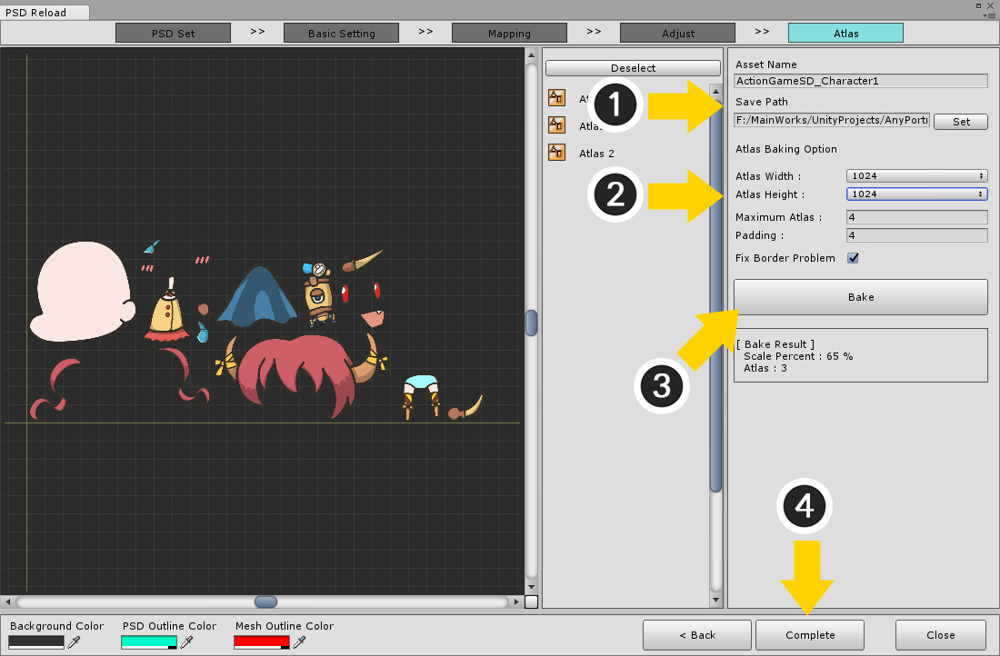
마지막 단계에서는 Atlas를 생성하고 적용합니다.
이 기능은 PSD 파일을 가져오는 기본 기능과 동일합니다.
(메시 그룹의 크기를 설정하는 기능은 제외됩니다.)
이미 Bake가 된 상태이므로 기본적으로 이전의 Atlas Bake 설정과 동일한 값을 가집니다.
(1) Atlas 텍스쳐 에셋의 이름과 저장 경로를 설정합니다.
(2) Atlas의 크기와 개수, 여백, 외곽선 보정 설정을 확인하고 필요할 경우 변경합니다.
(3) Bake 버튼을 눌러서 Atlas를 생성합니다.
(4) Complete 버튼을 눌러서 AnyPortrait 에디터에 적용합니다.

메인 에디터로 돌아오면 갱신된 PSD 이미지들이 적용된 것을 확인할 수 있습니다.
기존의 객체가 남아있거나 새로운 객체가 추가된 것을 볼 수 있으며, 버텍스들을 수정해야하는 메시들도 보입니다.
레이어 이미지가 변경된 메시의 경우

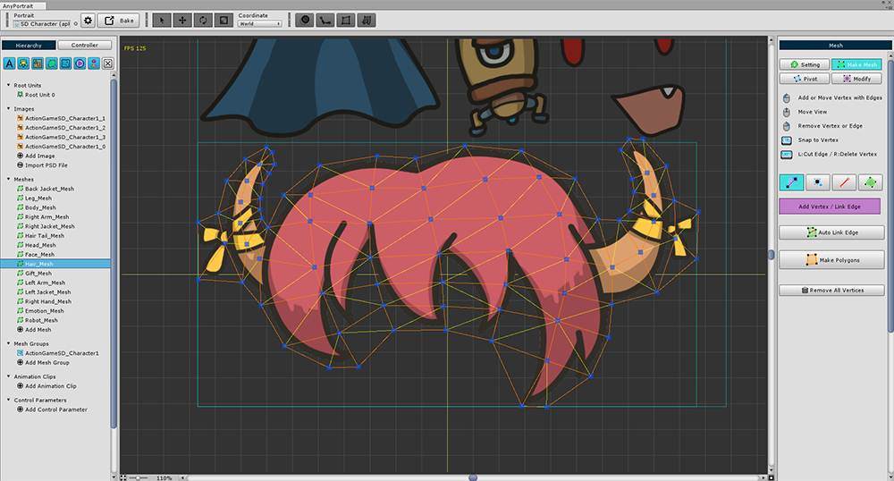
이미지가 변경됨에 따라 메시를 수정해야할 필요가 있습니다.
메시를 선택하고 버텍스를 추가하거나 삭제하여 새로운 이미지에 맞게 수정합니다.
주의.
만약 갱신되는 메시에 모디파이어나 애니메이션이 적용되어있다면 기존의 버텍스를 모두 삭제하지 않는 것을 권장합니다.
새로운 버텍스를 추가하거나 일부의 버텍스만 삭제한다면, 기존의 나머지 버텍스들에 대한 모디파이어 정보들은 유지됩니다.
레이어가 삭제된 메시의 경우

새로 가져온 PSD 파일에 레이어가 존재하지 않다고 하더라도 기존의 메시는 삭제되지 않습니다.
다만, 더 이상 새로운 Atlas를 공유하지 않으므로 "이전의 Atlas"를 계속 사용합니다.
이 경우, 이 메시가 사용하는 "이전의 Atlas"도 삭제되지 않고 계속 사용되므로 최적화에 문제가 있을 수 있습니다.
자세한 내용은 이어지는 다음의 내용을 참고하세요.
새로 추가된 메시의 경우

새로 추가된 메시는 기본적으로 사각형의 메시로 생성이 됩니다.
PSD 파일을 처음 가져올 때와 마찬가지로 버텍스들을 추가하여 메시를 수정합니다.
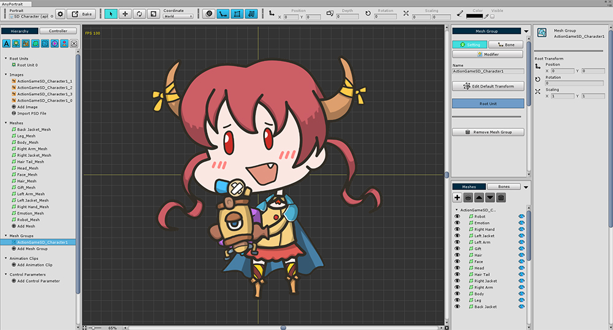
위와 같은 작업들을 마치면 새로운 PSD 일러스트가 적용이 된 캐릭터를 볼 수 있습니다.
Atlas 텍스쳐 에셋 저장 방식

Atlas 이미지들이 텍스쳐 에셋으로 저장된 폴더를 보면 위와 같이 저장된 것을 확인할 수 있습니다.
1. Preserved 폴더 : "기존의 Atlas 이미지"들 중에서 계속 사용되는 이미지들이 저장됩니다.
2. Unused 폴더 : "기존의 Atlas 이미지"들 중에서 덮어씌워져서 삭제된 이미지들이 저장됩니다.
3. 새로 생성된 Atlas 텍스쳐 에셋 : PSD 다시 가져오기 기능을 통해서 새로 생성된 Atlas의 텍스쳐 에셋들 입니다.

Preserved 폴더는 "기존의 Atlas 이미지"들 중에서 계속 사용되는 텍스쳐 에셋들이 저장되는 폴더입니다.
Bake 후, 경우에 따라 텍스쳐 에셋의 이름이 조금 바뀔 수 있습니다.
기존의 PSD 파일에는 존재했지만 새로운 PSD 파일에는 삭제된 이미지 레이어에 대한 메시가 존재할 경우, 그 메시는 기존의 Atlas를 계속 사용해야합니다.
이때 사용되는 Atlas 이미지들이 Preserved 폴더에 이동되어 저장됩니다.
이 폴더는 기본적으로 삭제되어서는 안되지만, 이 폴더의 텍스쳐 에셋들은 최적화에 도움이 되지 않습니다.
만약 해당 메시와 텍스쳐가 더이상 사용되지 않는다면, AnyPortrait 에디터에서 메시와 이미지를 삭제한 뒤, 이 폴더의 텍스쳐를 삭제하시면 됩니다.
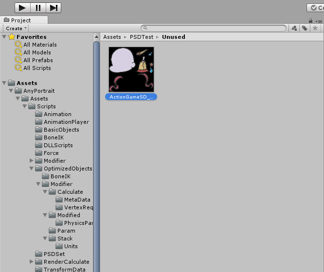
Unused 폴더는 "기존의 Atlas 이미지"들 중에서 덮어 씌워져서 사용되지 않는 텍스쳐 에셋들이 저장되는 폴더입니다.
Bake 후, 각각의 텍스쳐 에셋들의 이름 뒤에 "(Unused)"라는 글자가 추가됩니다.
Atlas에 대한 모든 메시들이 새로운 PSD 파일의 레이어로 갱신된다면, 기존의 Atlas는 더이상 사용되지 않으며 삭제가 되어야 합니다.
AnyPortrait 에디터상에서는 기존의 Atlas 정보를 삭제하지만, 이때의 텍스쳐 에셋들은 삭제되지 않고 Unused 폴더로 이동되어 저장됩니다.
필요한 경우 복구되어 이 파일이 다시 이용될 수 있기 때문입니다.
하지만, 기본적으로는 이 폴더의 에셋들은 이용되지 않을 것이므로 사용자가 확인하여 직접 삭제하는 것을 권장합니다.
PSD 세트 정보를 직접 생성하여 가져오기
PSD 파일을 다시 가져오는 기능은 AnyPortrait v1.0.6 부터 지원되는 기능입니다.
안타깝게도, 이전 버전에서 제작된 캐릭터에 대해서는 이 기능에서 사용되는 각종 데이터들이 저장되지 않기 때문에 "PSD 세트" 정보가 생성되어 있지 않습니다.
하지만 "PSD 세트" 정보를 직접 만들어서 PSD 파일을 다시 가져올 수 있습니다.
해야할 작업이 다소 많지만, 다음의 안내와 같이 순서대로 처리하면 됩니다.
(이 방법은 기타 다른 문제로 인하여 수작업으로 설정해야하는 경우를 모두 포함합니다.)

PSD 파일 다시 가져오기 다이얼로그를 엽니다.
PSD 세트 정보가 저장되어 있지 않다면 위 화면과 같이 아무런 정보가 나타나지 않습니다.
(1) Add New PSD Set 버튼을 눌러서 PSD 세트를 하나 생성합니다.
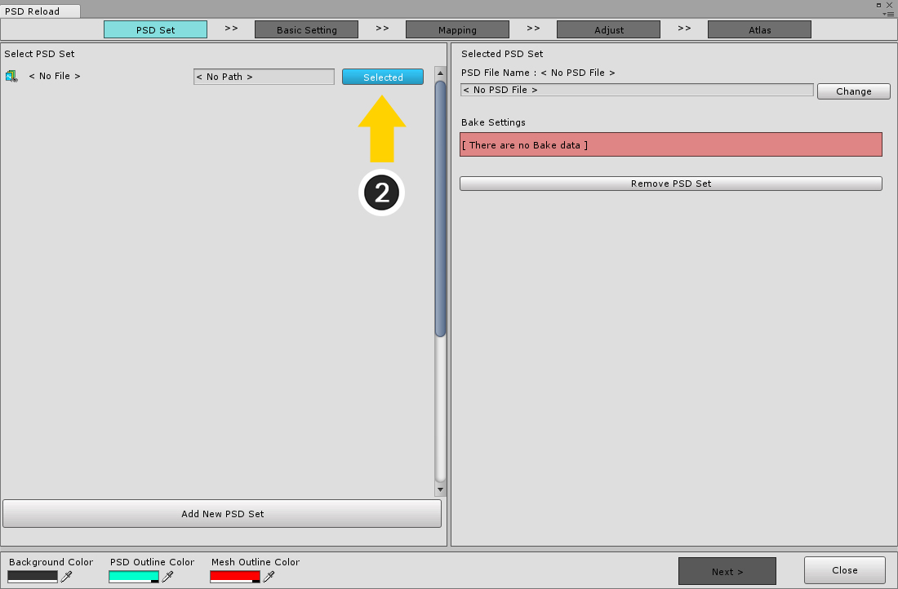
(2) 새로 생성된 PSD 세트를 선택합니다.
(만약 삭제하고자 한다면 Remove PSD Set 버튼을 누르면 됩니다.)
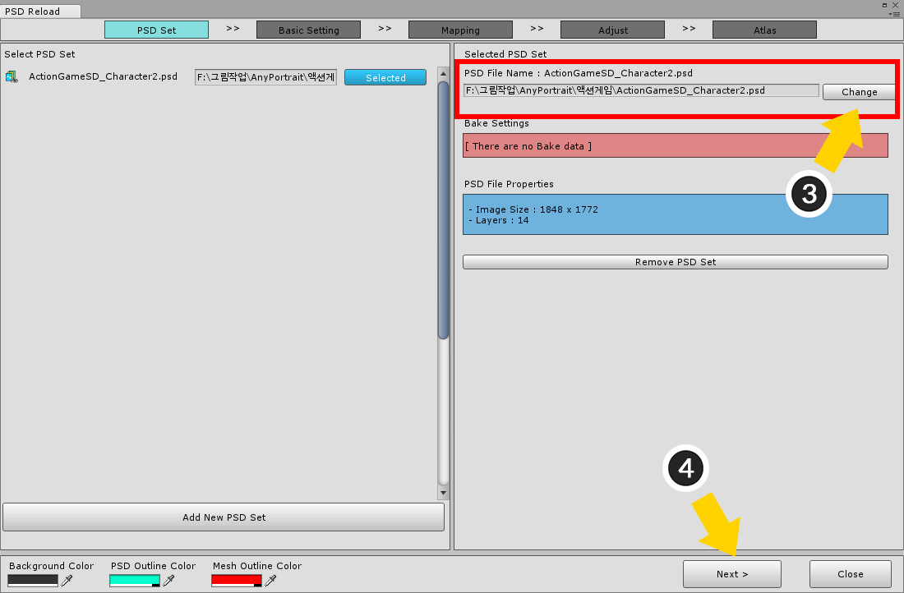
(3) Change 버튼을 눌러서 PSD 파일을 선택합니다.
(4) Next 버튼을 눌러서 다음 단계로 이동합니다.

대상이 되는 메시 그룹과 이미지들이 설정되어있지 않습니다.
미리보기 화면에서 메시 그룹이 나타나지 않으며, Next버튼이 비활성된 것을 볼 수 있습니다.

(1) Change 버튼을 누릅니다.
(2) PSD 이미지가 적용될 메시 그룹을 선택하고 (3) Select 버튼을 누릅니다.

Atlas 이미지를 등록해야합니다.
(1) Add Image 버튼을 누르고, (2) 이미지를 선택하여 추가합니다.
또는, Add Images Automatically 버튼을 누르면 메시 그룹에서 사용하는 모든 이미지가 자동으로 등록이 됩니다.
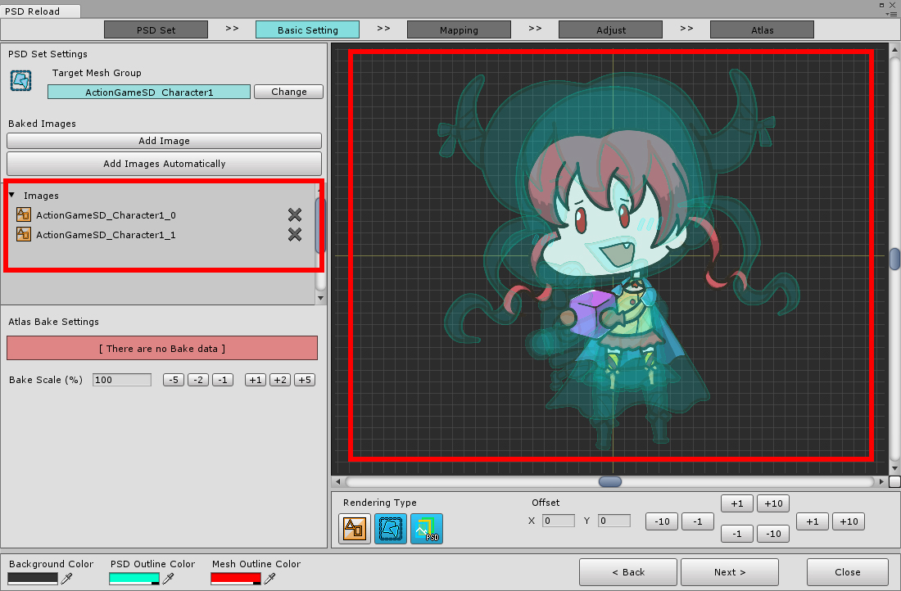
메시 그룹과 이미지가 모두 등록된 화면입니다.
현재는 위치는 물론이고, 크기도 맞지 않습니다.
위 화면은 PSD 이미지에 비해서 메시 그룹이 작은 상태입니다.
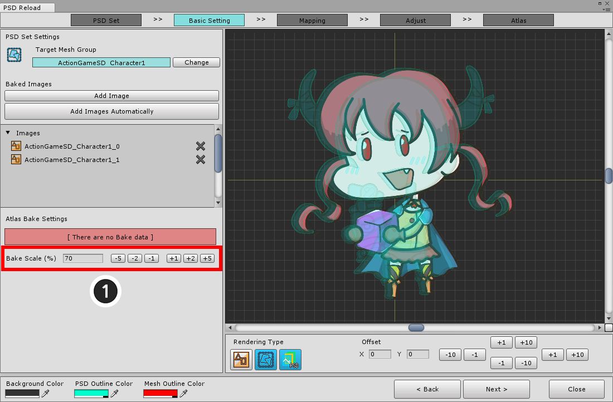
(1) Bake Scale의 값을 수정하여 메시 그룹과 PSD 이미지의 크기가 동일하도록 보정합니다.
크기 증감 툴을 이용하여 빠르게 변경할 수 있습니다.
미리보기 화면을 통해서 정확한 크기 값을 찾아서 설정합니다.
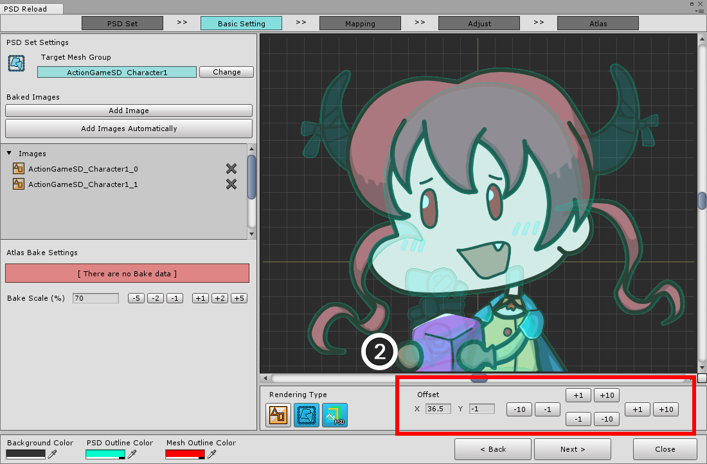
(2) Offset의 값을 수정하여 메시 그룹과 PSD 이미지가 겹치도록 위치를 수정합니다.
(실수값을 입력할 수 있습니다.)
메시 그룹과 PSD 파일의 위치와 크기 보정이 모두 끝났다면 Next 버튼을 눌러서 다음 단계로 이동합니다.

세번째 단계에서는 PSD 레이어를 메시 그룹의 객체들과 연결시키는 Mapping 단계입니다.
PSD 세트를 새로 만들었기 때문에 하나도 연결이 안된 상태입니다.

(1) PSD 레이어의 Not Selected 버튼을 누르고,
(2) 대상 객체의 Select 버튼을 눌러서 연결을 합니다.
이미 연결된 상태에도 동일하게 다시 연결할 수 있습니다.

연결이 되었다면 위 화면과 같이 나타납니다.
미리보기 화면에서도 PSD 이미지 레이어와 연결된 메시가 같이 렌더링됩니다.

새로 추가되는 레이어에 대해서는 연결을 하지 않은 상태로 둡니다.
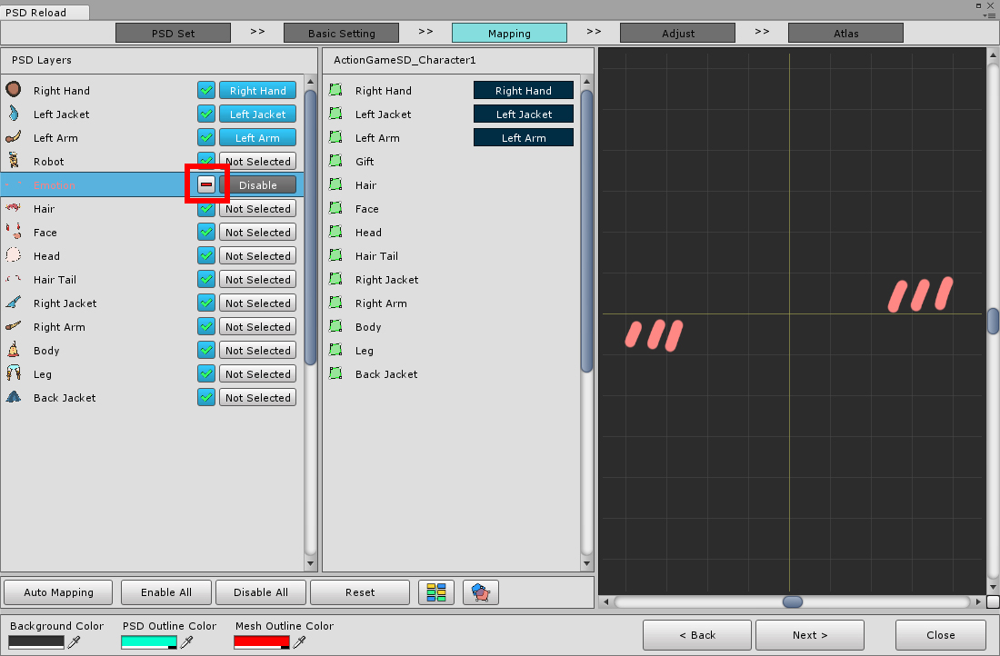
만약 가져오지 않을 레이어가 있다면 활성/비활성 버튼을 눌러서 비활성 상태로 만듭니다.
이 기능은 연결을 해제하는 특징이 있기 때문에, 만약 연결을 해제만 하고 싶다면 비활성을 한번 했다가 다시 활성 상태로 바꾸면 됩니다.

(1) Auto Mapping 기능을 이용하면 일괄적으로 "활성화되었으며 아직 연결 안된 PSD 레이어"들을 객체들과 자동으로 연결합니다.
이름과 레이어 순서를 이용하여 비교한 뒤 연결하는 기능이므로, 간혹 잘못 연결하는 경우가 있습니다.
이 기능을 사용한 후, 꼭 확인하시길 바랍니다.

"연결 상태를 색상으로 보이기" 버튼을 눌러서 색상을 통해 어떻게 연결되어 있는지 쉽게 확인할 수 있습니다.
연결 작업이 모두 끝났다면 Next 버튼을 눌러서 다음 단계로 이동합니다.
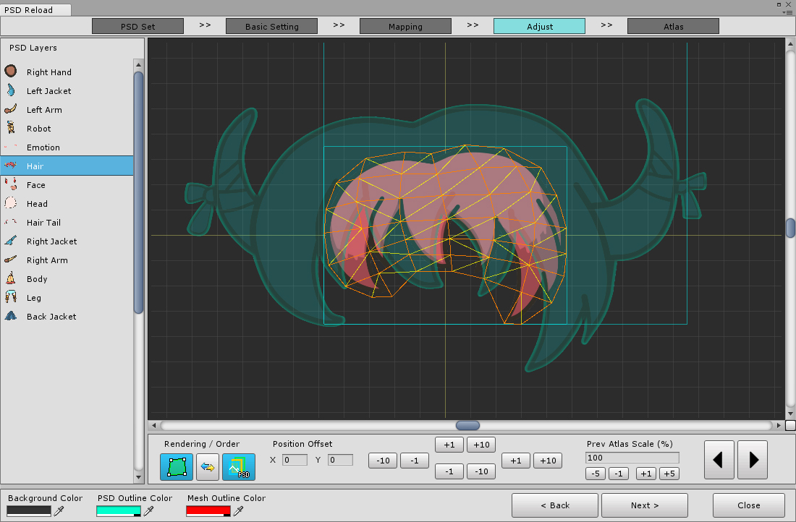
모든 메시와 PSD 레이어의 위치와 크기를 보정해야합니다.
PSD 세트를 새로 만든 경우, 위치는 물론이고 크기도 맞지 않습니다.

(1) Prev. Atlas Scale 값을 수정하여 크기를 보정합니다.
미리보기 화면에서는 PSD 레이어에 대한 상대 크기를 수정하기 때문에, 값과 반대로 메시의 크기가 바뀌는 것처럼 나타납니다.
이 값은 모든 레이어에 대해서 동일하게 적용되므로 한번만 설정하면 됩니다.
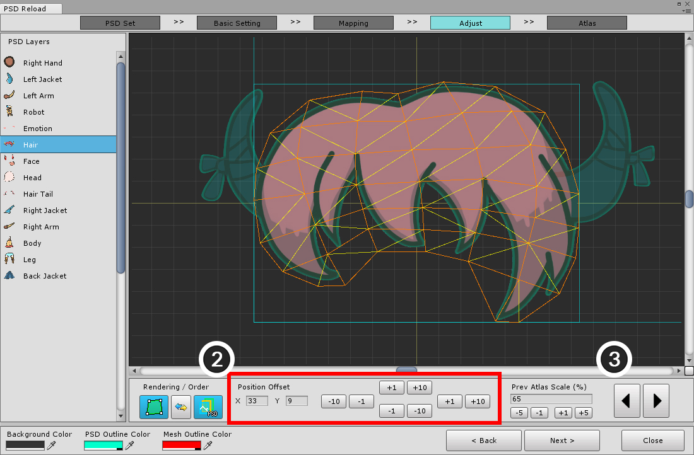
(2) Position Offset을 수정하여 메시와 PSD 이미지가 정확히 겹치도록 만듭니다.
정확히 겹치는 것이 확인되었다면 다음 레이어를 선택하여 동일하게 작업을 합니다.
(3) 레이어 전환 버튼을 이용하면 편리합니다.


모든 레이어에 대해서 메시와 겹치도록 위치를 보정합니다.
새로 추가되는 PSD 레이어에 대해서는 별도의 작업을 할 필요가 없습니다.
Next 버튼을 눌러서 다음 단계로 이동합니다.
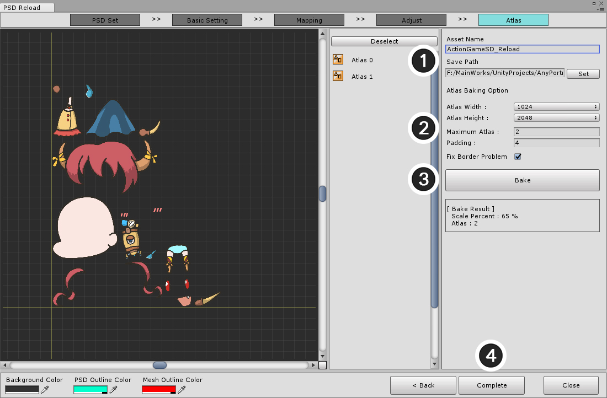
Atlas 설정을 하고 Bake하여 생성한 뒤, AnyPortrait로 전달하는 단계입니다.
(1) 텍스쳐 에셋의 이름을 설정하고 저장 경로를 설정합니다.
기존의 텍스쳐 에셋의 이름과 동일하게 설정해도 됩니다. (이름은 자동으로 변경됩니다.)
(2) Atlas의 크기, 개수, 여백, 가장자리 보정 등을 설정합니다.
(3) Bake 버튼을 눌러서 Atlas를 생성합니다.
(4) Complete 버튼을 누르면 AnyPortrait로 갱신된 정보가 적용됩니다.
PSD 파일 다시 가져오기 기능에 대한 이슈들과 해결 방법
PSD 파일을 다시 가져오는 과정은 매우 복잡하고 각 과정이 정확해야합니다.
만약 몇가지 작업이 부정확했다면 결과물이 이상할 수 있습니다.
다음은 발생하기 쉬운 경우들과 해결 방법입니다.
이슈 1 : 메시 그룹의 위치 보정이 잘못된 경우

메시 그룹과 PSD 파일의 기본 위치를 정확하게 겹치도록 하지 않는 경우에 발생하는 문제입니다.
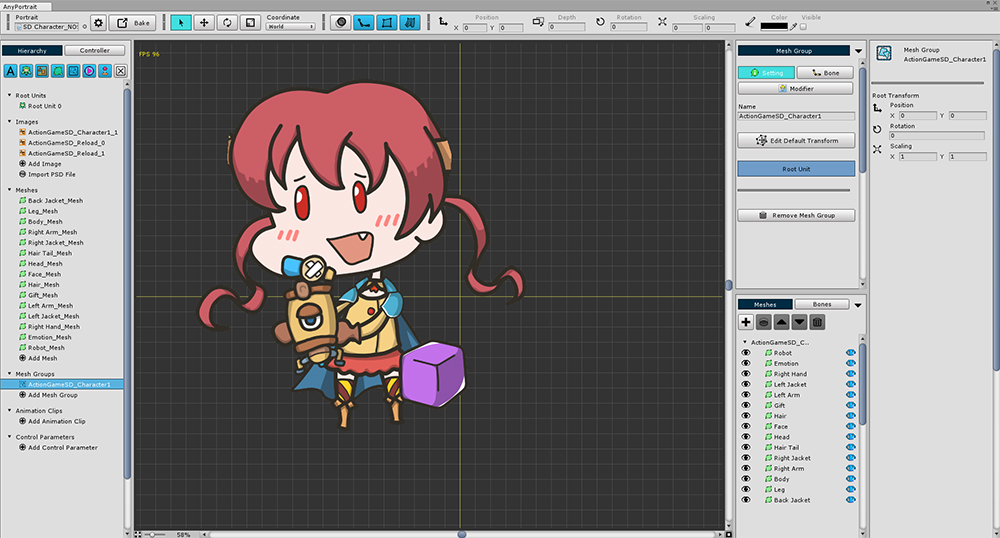
생성된 메시 그룹이 잘못된 보정값 만큼 이동한 것을 볼 수 있습니다.
해결 방법
- 설정된 위치 보정값을 기억하여 크기는 동일하고, 부호만 반대로 바꾸어 PSD 파일을 다시 가져옵니다.
위치 보정값을 모른다면 보정값을 다르게 바꾸어가면서 다시 PSD 파일을 가져오면 됩니다.
- 메시 그룹의 기본 위치를 수정하여 해결할 수는 있지만, 이 경우 본과 모디파이어 등의 정보가 잘못 처리될 수 있습니다.
이슈 2 : 메시와 PSD 이미지 레이어의 위치 보정이 잘못된 경우

메시와 PSD의 이미지 레이어의 위치 보정이 정확하게 처리되지 않을 수 있습니다.
특히, PSD 파일이 많은 레이어를 가졌다면 실수로 작업이 누락될 수 있습니다.


위치 보정값이 잘못된 거리만큼 메시의 버텍스들이 이동되어 잘못 출력되는 것을 볼 수 있습니다.
해결 방법

PSD 파일을 다시 가져옵니다.
레이어의 위치를 보정하는 화면에서 메시에 맞게 설정합니다.
이미 메시의 텍스쳐가 잘못 출력되는 상태이므로, 메시 이미지를 기준으로 위치를 보정하면 안됩니다.
이 경우에는 메시의 와이어프레임을 기준으로 위치를 수정해야합니다.
이슈 3 : Atlas의 설정을 바꾸고자 하는 경우

Atlas의 크기나 여백 등을 변경하여 다시 생성하고자 하는 경우, 이전 Atlas의 설정과 같아야 하는 필요는 없습니다.
PSD 파일 다시 가져오기 다이얼로그에서 필요로 하는 Atlas 설정으로 변경한 뒤 Bake하면 됩니다.
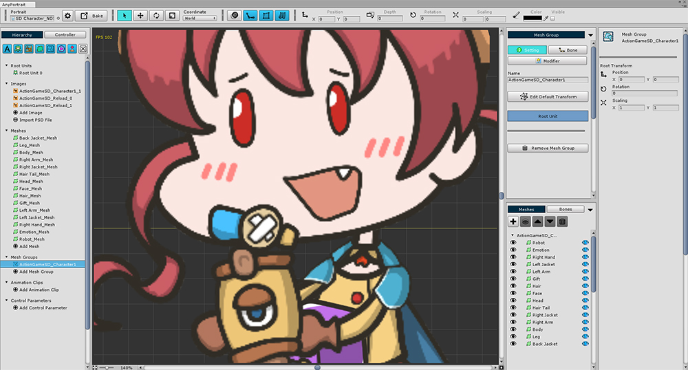
해상도가 크게 변경되어도 문제없이 적용이 됩니다.
이슈 4 : 새로운 레이어를 추가하는 경우

새로운 레이어를 추가하여 PSD 파일을 다시 가져오는 경우, 해당 메시는 가장 상단에 위치하게 됩니다.

(1) 레이어 순서 변경 기능을 이용하여 적절하게 객체의 렌더링 순서를 변경합니다.